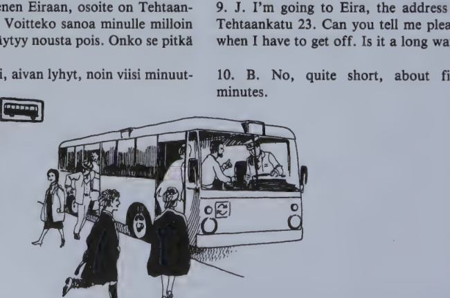
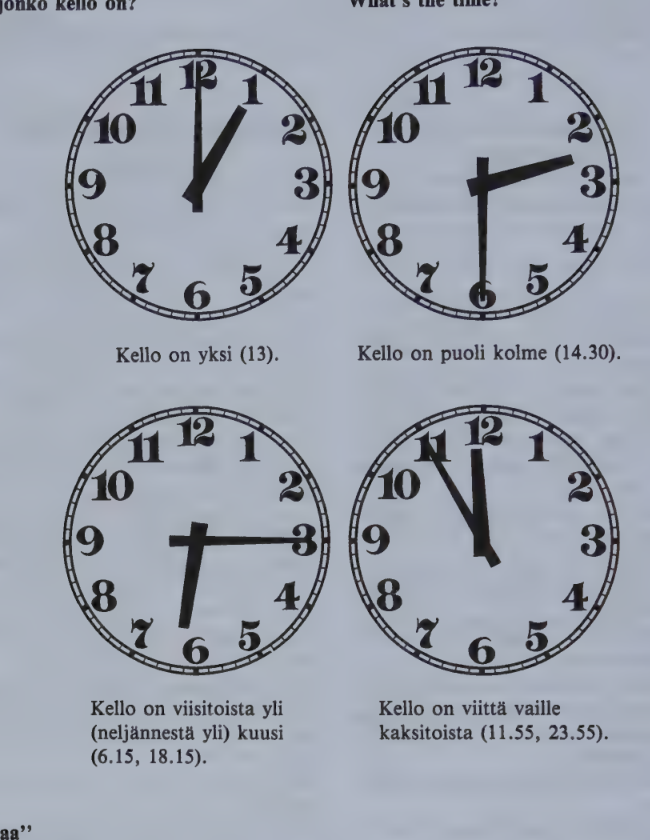
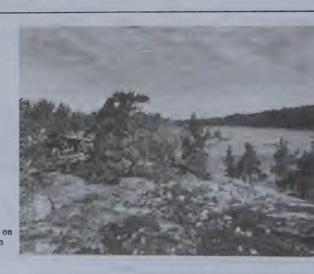

Kappale 18 / Lesson 18#
Toinen vaikea asiakas / Another difficult customer#
Suomi |
English |
|---|---|
1. Asiakas. Tama kamera taytyy vaihtaa. Se ei toimi. |
1. Customer. This camera must be changed. It doesn’t work. |
2. Nuori mies. Vai niin. Mika vika siina on? |
2. Young man. I see. What’s wrong with it? |
3. A. En mina tieda. Se ei toimi, se on rikki, kuuletteko? |
3. C. I don’t know. It doesn’t work, it’s broken, do you hear? |
4. N. Kuulen, minulla on hyvat korvat. Mutta … |
4. Y. Yes, I do, I’ve got good ears. But … |
5. A. Katsokaa itse, filmi ei liiku. Naetteko? |
5. C. Look for yourself, the film doesn’t move. Do you see? |
6. N. Naen, minulla on hyvat silmat. Mutta miksi … |
6. Y. Yes, I do, I’ve got good eyes. But why … |
7. A. Minulla on kiire. Antakaa minulle heti toinen, parempi kamera! Vai onko teilla jalat? |
7. C. I’m in a hurry. Give me another, better camera at once! Have you got legs? |
8. N. On, minulla on kaksi jalkaa. |
8. Y. Yes, I’ve got two legs. |
9. A. Ja kaksi kattako? Jos on, niin ottakaa tama kamera ja tuokaa minulle toinen. Nopeasti! |
9. C. And two hands? If so, take this camera and bring me another one. Quick! |
10. N. Kuulkaa nyt, hyva herra … |
10. Y. Now listen, sir … |
11. A. No mita te viela haluatte sanoa? Puhukaa! Onko teilla suu, onko teilla kieli? Etteko te ymmarra mitaan! Minkalainen myyja te oikein olette? |
11. C. Well, what else do you want to say? Speak up! Have you got a mouth, have you got a tongue? Don’t you understand anything? What kind of a sales assistant are you? |
12. N. En mina ole myyja. Mina olen asiakas! |
12. Y. I’m not a sales assistant. I’m a customer! |
hyva - parempi - paras
"When"
Milloin tulet meille?
Kun tulet meille, saat kahvia ja kakkua.
Sanasto / Vocabulary#
Finnish |
English |
|---|---|
itse-a-n |
self; myself, yourself etc. |
+jalka-a jalan |
foot; leg |
kamera-a-n |
camera |
korva-a-n |
ear |
kuul/la (kuule/n-t-e-mme-tte-vat) |
to hear |
+liikku/a |
to move, be in motion |
liikku/u |
moves |
liikku/mme-tte liikkuvat |
we/you/they move |
mikaan mitaan minkaan |
any, anything |
ei mikaan |
no, not any, nothing |
paras-ta parhaan |
best |
+parempi parempaa paremman |
better |
rikki |
broken; in pieces |
silma-a-n |
eye |
suu-ta-n |
mouth |
toimi/a (toimi/n-t-i-mme-tte-vat) |
to act; to function, work, operate |
taytyy |
must |
+vaihta/a |
to change, exchange |
vaihda/n-t vaihtaa |
I/you change |
vaihda/mme-tte vaihtavat |
we/you/they change |
+vika-a vian |
fault, defect, something wrong |
Kappale 19 / Lesson 19#
Bussissa ja raitiovaunussa / On the bus and streetcar#
Ystavamme James nousee bussiin. Hanen taytyy menna Eiraan. Hanen uusi tyopaikkansa on siella.
Suomi |
English |
|---|---|
1. J. Meneeko tama bussi keskustaan? Mita lippu maksaa? |
1. J. Does this bus go to the Center? What does a ticket cost? |
2. Kuljettaja. Kertalippu …, kymmenen matkan lippu … markkaa. |
2. Bus driver. A single ticket is …, a ten-trip card is … marks. |
3. J. Antakaa minulle kymmenen matkan lippu. Mika raitiovaunu menee Eiraan? |
3. J. Give me a ten-trip card. Which streetcar goes to Eira? |
4. K. Numero 3. |
4. B. Number three. |
5. J. Ja missa minun taytyy vaihtaa? |
5. J. And where do I have to change? |
6. K. Stockmannin pysakilla. |
6. B. At the Stockmann stop. |
7. J. Monesko pysakki se on? |
7. J. How many stops is it from here? |
8. K. Neljas. |
8. B. The fourth. |
Koska on aamu, bussi on taynna. Jamesin taytyy seisoa koko matka. Mihin kaikki menevat? Yksi menee tyohon, toinen kauppaan, kolmas kouluun, neljas yliopistoon …
James vaihtaa raitiovaunuun numero 3.
Suomi |
English |
|---|---|
9. J. Menen Eiraan, osoite on Tehtaankatu 23. Voitteko sanoa minulle milloin minun taytyy nousta pois. Onko se pitka matka? |
9. J. I’m going to Eira, the address is Tehtaankatu 23. Can you tell me please when I have to get off. Is it a long way? |
10. K. Ei, aivan lyhyt, noin viisi minuuttia. |
10. B. No, quite short, about five minutes. |
11. K. Seuraava pysakki! |
11. B. Next stop, sir! |
12. J. Paljon kiitoksia, nakemiin. |
12. J. Thanks a lot, goodbye. |
James istuu ja katselee ulos. Han ajattelee: “Kaunis paiva. Tanaan lahden Porvooseen Ritvan kanssa.” Vaunu tulee Eiraan, Tehtaankadulle.

ensimmainen - ensin
Naetko nuo pojat? Ensimmainen on Eero, toinen Leo, kolmas Ari. He nousevat bussiin. Ensin nousee Eero, sitten Leo ja Ari.
minun koti/ni meidan koti/mme
sinun teidan nne
hanen nsa heidan nsa
rt kertalippu, kartta, postikortti
ht-hd vaihdan bussia, lahden Lahteen, Ahti vaihtaa, Ahti lahtee Lahteen
ay-au vaunu on taynna, Taunon taytyy vaihtaa vaunua
Kielioppia / Structural notes#
1. The “into” case (illative)#
Finnish |
English |
Illative |
English |
|---|---|---|---|
maa |
country |
maa/han |
to a country |
tyo |
work |
tyo/hon |
to work |
tiistai |
Tuesday |
tiistai/hin |
until Tuesday |
One-syllable words have the “into” ending h + vowel + n, the vowel being the same as the one before h. All stems ending in a diphthong also take this ending.
Finnish |
English |
Illative |
English |
|---|---|---|---|
Porvoo |
Porvoo/seen |
to Porvoo |
|
huone (huonee/n) |
room |
huonee/seen |
into the room |
kaunis (kaunii/n) |
beautiful |
kaunii/seen |
|
hidas (hitaa/n) |
slow |
hitaa/seen |
Longer stems ending in a long vowel have the ending -seen; the stem comes from the genitive.
Finnish |
English |
Illative |
English |
|---|---|---|---|
talo |
house |
talo/on |
into a house |
sauna |
sauna/an |
into a sauna |
|
Suomi (Suome/n) |
Suome/en |
to Finland |
|
toinen (toise/n) |
other |
toise/en |
|
mies (miehe/n) |
man |
miehe/en |
into the man |
The largest group of Finnish nouns have a stem ending in one short vowel. Their “into” case ending is a prolongation of the final vowel of the stem + n. However, if their gen. stem differs from the basic form in regard to the k p t changes, the consonant of the basic form must be used:
Finnish |
Stem |
English |
Illative |
English |
|---|---|---|---|---|
koti |
kodi/n |
home |
koti/in |
(into the) home |
Turku |
Turu/n |
Turku/un |
to Turku |
|
kirkko |
kirkon |
church |
kirkko/on |
to church |
Lahti |
Lahde/n |
Lahte/en |
to Lahti |
|
parempi |
paremma/n |
better |
parempa/an |
Note: vesi (vede/n) -> vete/en into water, kasi (kade/n) -> kate/en into the hand.
Finnish |
Illative |
|---|---|
mika maa? |
mi/hin maa/han? |
tama maa |
ta/han maa/han |
se maa |
sii/hen maa/han |
Note also:
Finnish |
English |
|---|---|
Menen koti/i/ni. |
I’m going to my home. |
Mene huoneese/si! |
Go to your room! |
Panetteko sokeria tehee/nne? |
Do you put sugar in your tea? |
The “into” case ending drops its final -n before possessive suffixes. The “into” case is used extensively of place-names (city districts, towns and cities, countries, continents etc.):
James Brown tulee Toolo/on,
Helsinki/in,
Suome/en,
Eurooppa/an.
2. Ordinal numbers#
Kuinka mones? = Monesko? Which in order (“the how-manieth”)?
Finnish |
English |
|---|---|
ensimmainen (ensimmaista ensimmaisen) |
the 1st |
toinen (toista toisen) |
2nd |
kolmas (kolmatta kolmannen) |
3rd |
neljas (neljatta neljannen) |
4th |
viides (viidetta viidennen) |
5th |
kuudes (kuudetta kuudennen) |
6th |
seitsemas (seitsematta seitsemannen) |
7th |
kahdeksas (kahdeksatta kahdeksannen) |
8th |
yhdeksas (yhdeksatta yhdeksannen) |
9th |
kymmenes (kymmenetta kymmenennen) |
10th |
yhdes/toista (yhdetta/toista yhdennen/toista) |
11th |
kahdes/toista |
12th |
kolmas/toista |
13th |
kahdes/kymmenes |
20th |
kahdes/kymmenes/yhdes |
21st |
kahdes/kymmenes/kahdes |
22nd |
sadas (sadatta sadannen) |
100th |
kolmas/sadas/kuudes/kymmenes/viides |
365th |
tuhannes (tuhannetta tuhannennen) |
1000th |
miljoonas (miljoonatta miljoonannen) |
1 000 000th |
Note:
Turku, 10. syyskuuta 1985 (= 10.9.1985)
Ranskan Napoleon I ja III, Englannin Elisabet I ja II
Eilen oli Helsinki-maraton. Meidan Pekka oli 236:s.
3. “minun taytyy lahtea”#
Finnish |
English |
|---|---|
minun taytyy lahtea |
I must go |
sinun taytyy lahtea |
you must go |
hanen taytyy lahtea |
he must go |
meidan taytyy lahtea |
we must go |
teidan taytyy lahtea |
you must go |
heidan taytyy lahtea |
they must go |
Finnish |
English |
|---|---|
Kallen taytyy soittaa kotiin. |
Kalle must call home. |
Perheen taytyy ottaa laina. |
The family must take a loan. |
Taman opiskelijan taytyy saada stipendi. |
This student must get a scholarship. |
Kenen taytyy vieda koira ulos tanaan? |
Who must take the dog out today? |
Question:
Taytyy/ko sinun lahtea?
meidan vaihtaa bussia?
perheen ottaa laina?
Note:
Finnish |
English |
|---|---|
Sinun taytyy kertoa hanelle. |
You must tell her. |
Sina et saa kertoa hanelle. |
You must not tell her. |
Sanasto / Vocabulary#
Finnish |
English |
|---|---|
aamu-a-n |
morning |
+ajatel/la (ajattele/n-t-e-mme-tte-vat) |
to think, think over, consider |
katsel/la (katsele/n-t-e-mme-tte-vat) |
to watch, look |
+kerta-a kerran |
time (in telling how many times) |
kerran/kaksi kertaa |
once/twice |
keskusta-a-n |
center |
koko (indecl.) |
whole, all, entire |
kuljettaja-a-n |
driver |
+lippu-a lipun |
ticket; flag |
lyhyt-ta lyhyen |
short, brief |
matka-a-n |
distance, way; trip, journey |
+minuutti-a minuutin |
minute |
mones/ko? = kuinka mones? |
which in order? |
nous/ta (nouse/n-t-e-mme-tte-vat) |
to rise, get up, arise; to get on, off |
+paikka-a paikan |
place, location, site; seat; job |
+pysakki-a pysakin |
stop (for bus, streetcar, train) |
raitio/vaunu-a-n |
streetcar, tram |
seiso/a (seiso/n-t-o-mme-tte-vat) |
to stand |
seuraava-a-n |
following, the next |
+tyo/paikka-a-paikan |
job, situation |
taynna |
full |
+tayty/a |
to have to, must |
ulos |
out |
+vaihto-a vaihdon |
change, exchange, transfer |
vaunu-a-n |
carriage, (street)car |
*
Finnish |
English |
|---|---|
hissi-a-n |
lift, elevator |
joulu-a-n |
Christmas |
kerros-ta kerroksen |
floor, storey |
+kirkko-a kirkon |
church |
sokeri-a-n |
sugar |
Kappale 20 / Lesson 20#
Tapaaminen kadulla / Meeting on the street#
Annikki tulee kaupasta, Linda metrosta.
Suomi |
English |
|---|---|
1. A. Hei, Linda. Mihin sina olet menossa? |
1. A. Hello, Linda. Where are you going? |
2. L. Tuohon pankkiin tuolla. |
2. L. To that bank over there. |
3. A. Mutta pankki on jo suljettu. Kello on melkein viisi. |
3. A. But the bank is already closed. It’s almost five o’clock. |
4. L. Mina luulin, etta pankit ovat auki yhdeksasta viiteen, kuten kaupat. |
4. L. I thought that banks are open from nine to five, like shops. |
5. A. Ei ei. Vain viisitoista yli neljaan maanantaista perjantaihin, ja lauantaina ne ovat kiinni. |
5. A. No, no. Only until quarter past four from Monday to Friday, and on Saturday they are closed. |
6. L. Voi voi. No, minun taytyy menna pankkiin huomenna. Mista sina olet tulossa? Sinulla on uusi kiva kasilaukku. |
6. L. Oh dear. Well, I must go to the bank tomorrow. Where are you coming from? You’ve got a nice new handbag. |
7. A. Se on tuosta liikkeesta, siella on talla viikolla ale. |
7. A. It’s from that store, there’s a sale there this week. |
8. L. Minusta se on ihana. Mita te teette ensi viikonloppuna? |
8. L. I think it’s lovely. What will you do next weekend? |
9. A. Me menemme kai maalle, Hollolaan. Matti on kotoisin Hollolasta. Meilla on siella kesamokki ja sauna pienen jarven rannalla. |
9. A. We’ll probably go to the country, to Hollola. Matti is from Hollola. We have a summer cottage and sauna there on a little lake. |
10. L. Ai kuinka kivaa! Missa pain Hollola on? |
10. L. Oh how nice! In what direction is Hollola? |
11. A. Vahan yli sata kilometria Helsingista Jyvaskylaan pain. |
11. A. A little more than a hundred kilometers from Helsinki in the direction of Jyvaskyla. |
12. L. Minusta sauna on todella ihana paikka. Meilla on sauna omassa talossa, ja meidan perheella on saunavuoro joka keskiviikko. Mutta hei nyt, Annikki, minun taytyy lahtea. Oli hauska tavata. Terveisia kaikille ja hauskaa viikonloppua! |
12. L. I think the sauna is really a wonderful place. We have one in our own building, and our family has a sauna time every Wednesday. Goodbye now, Annikki, I have to go. It was nice to meet you. Love to everybody, and have a nice weekend! |
13. A. Kiitos samoin. Terveisia Billille! |
13. A. Thanks, the same to you. Remember me to Bill! |
Paljonko kello on? / What’s the time?#

Kello on yksi (13).
Kello on puoli kolme (14.30).
Kello on viisitoista yli (neljannesta yli) kuusi (6.15, 18.15).
Kello on viitta vaille kaksitoista (11.55, 23.55).
"maa"
Missa maassa asutte? Belgiassa. (in a country, land)
Me asumme Maassa, ei Marsissa. (on Earth)
Me liikumme maassa, ei ilmassa. (on the ground)
Matti asuu maalla, ei kaupungissa. (in the country)
Maalla ja merella. (on land)
l kello kolme, kello nelja, suljettu kolmesta neljaan, Helsingista Hollolaan kallis kello, tuulen kylma ilma
r jarven rannalla, kilometri Turusta, terveisia Eerolle, mika kerros? ymmarratko? torstaina ja perjantaina
e-a kesa on lahella, viela nelja paivaa, han ei ole taalla enta te? en tieda viela mita tehda
Kielioppia / Structural notes#
1. The “out of” case (elative)#
Finnish |
English |
Elative |
English |
|---|---|---|---|
Turku (Turu/n) |
Turu/sta |
from T. |
|
liike (liikkee/n) |
store |
liikkee/sta |
from a store |
uusi koti (uude/n kodi/n) |
new home |
uude/sta kodi/sta |
from a new home |
The case ending -sta (-sta) roughly corresponds to the English prepositions “out of”, “from (within something)”. If the basic form and the gen. stem are different, the gen. stem is used.
Finnish |
Elative |
|---|---|
mika kaupunki? |
mi/sta kaupunki/sta? |
tama kaupunki |
ta/sta kaupunki/sta |
se |
siita |
Non-locally, the “out of” case is, among other things, used:
Finnish |
English |
|---|---|
Mista ihmiset puhuvat? Ilma/sta, tyo/sta, viikonlopu/sta, raha/sta. |
What do people talk about? About weather, work, the weekend, money. |
Helsingin Sanomissa on hyva artikkeli Ranskan ulkopolitiika/sta. |
The Helsingin Sanomat has a good article on French foreign policy. |
Kiitos kahvi/sta! |
Thanks for the coffee! |
Kiitos viimeise/sta! |
Thanks for last time! |
Pekka on tyossa yhdeksa/sta neljaan. |
Pekka works from nine to four. |
Olimme Oulussa maanantai/sta keskiviikko/on. |
We stayed in Oulu from Monday to Wednesday. |
Possessive suffixes, as always, follow after the case ending:
Finnish |
English |
|---|---|
Mina kerron sinulle perheesta/ni. |
I’ll tell you about my family. |
Lahdetko pois tyopaikasta/si? |
Are you going to leave your job? |
2. Expressions of time#
Finnish |
English |
|---|---|
milloin? maanantai/na |
when? on Monday |
ta/na maanantai/na |
this Monday |
ensi (viime) maanantai/na |
next (last) Monday |
maanantai-ilta/na |
on Monday evening |
ta/lla (ensi, viime) viiko/lla |
this (next, last) week |
joka maanantai, paiva, viikko |
every Monday, day, week |
joka toinen (kolmas) paiva |
every other (third) day |
maanantai/sta torstai/hin |
from Monday to Thursday |
yhde/sta kahte/en (viite/en) |
1-2 (5) |
seitsema/sta kahdeksa/an |
7-8 |
puoli yhdeksa/sta puoli kymmene/en |
from half past eight to half past nine |
kahde/sta/toista kahte/en-kymmene/en |
12-20 |

Kesamokki on usein jarven rannalla.
Sanasto / Vocabulary#
Finnish |
English |
|---|---|
ale-a-n (= alennus/myynti) |
sale |
auki (= avoinna) |
open |
ensi (indecl.) |
first; (of time) next |
jarvi-a jarvea jarven |
lake |
kesa-a-n |
summer |
kiinni |
closed, shut |
kotoisin: olla kotoisin |
be from, come from, be a native of |
+laukku-a laukun |
bag |
melkein |
nearly, almost |
meno: olla menossa |
to be going (somewhere) |
+mokki-a mokin |
cottage, cabin, hut |
oma-a-n |
own (adj.) |
pain: missa p.? |
in what direction? |
menna Ouluun pain |
go in the direction of O. |
asua Oulussa pain |
live in the direction of O. |
tulla Oulusta pain |
come from the direction of O. |
+ranta-a rannan |
shore, bank, (sea, river) side |
samoin |
likewise, in the same way |
+suljettu-a suljetun |
closed, shut |
+tava/ta (tapaa/n-t tapaa) |
to meet |
tapaa/mme-tte-vat |
|
terveiset terveisia (pl.) |
greetings, regards, love |
todella |
really, indeed |
tulo: olla tulossa |
to be coming, arriving |
+viikon/loppu-a-lopun |
weekend |
voi! voi voi! |
oh, oh my, oh dear! |
*
Finnish |
English |
|---|---|
neljannes-ta neljanneksen |
one fourth; quarter |
+politiikka-a politiikan |
politics; policy |
vailla (= vaille) |
lacking, without; (in telling time:) to, of |
viime (indecl.) |
last |
yli |
over, across; (in telling time:) past |